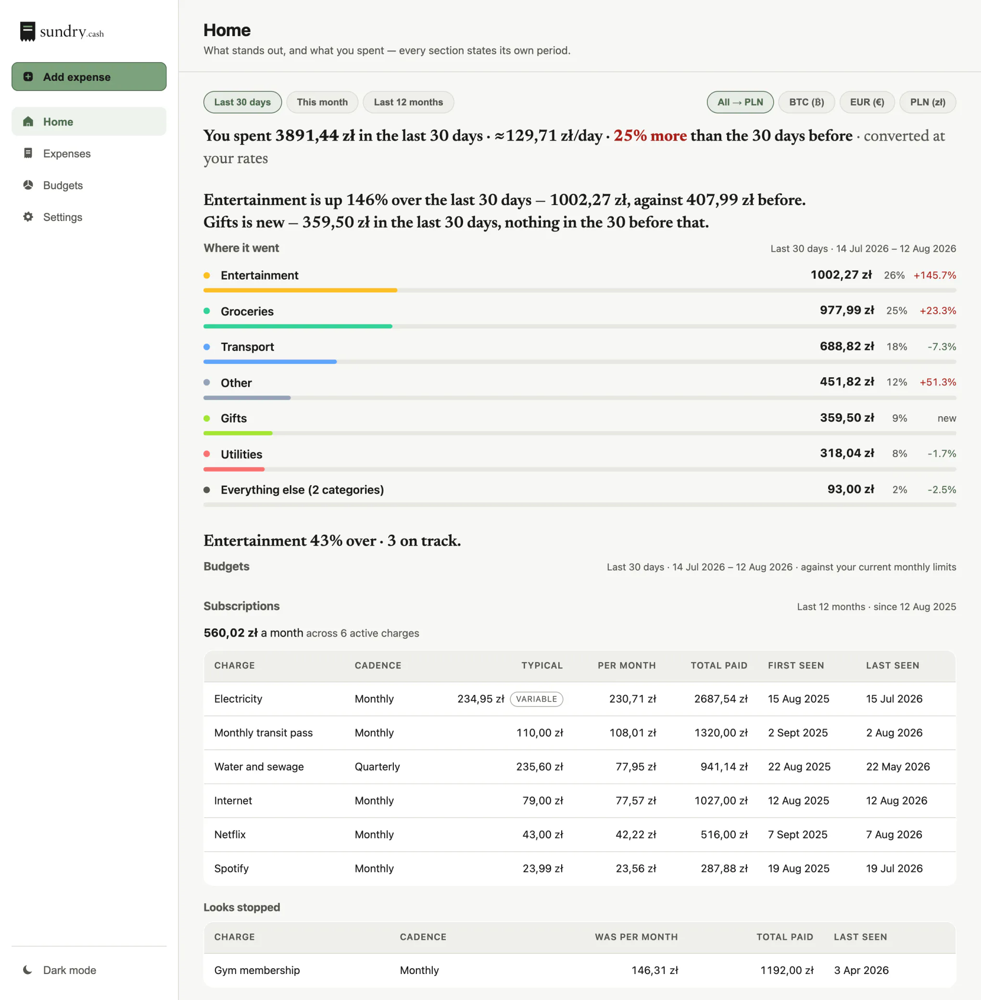
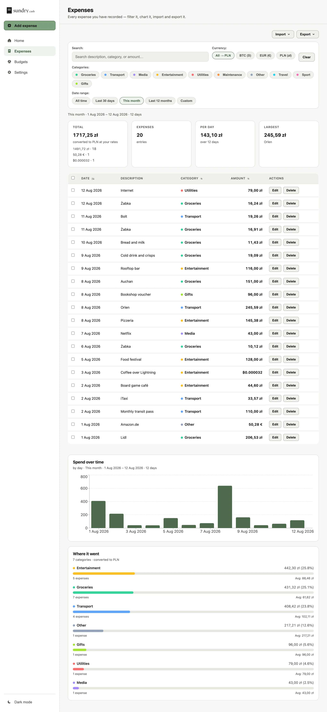
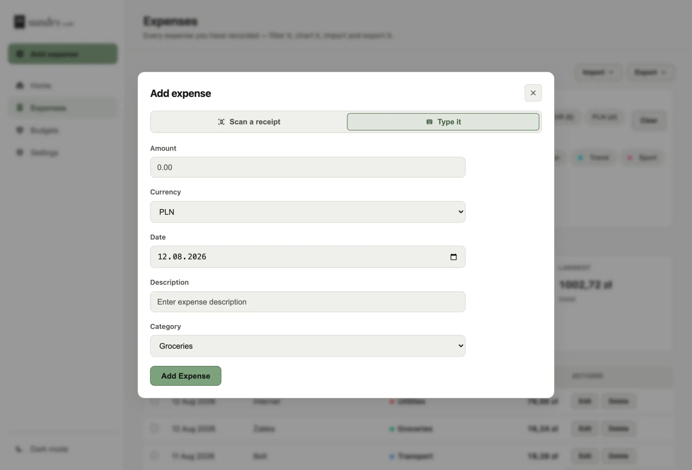
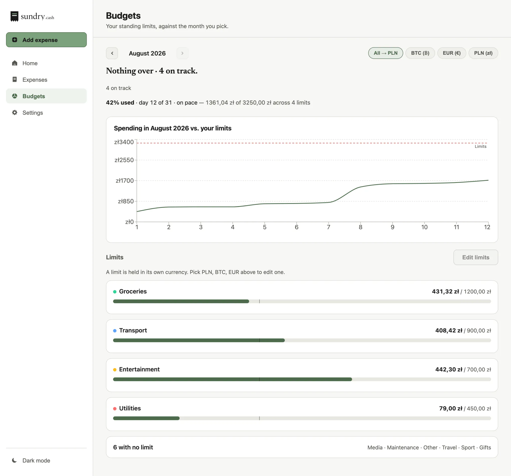
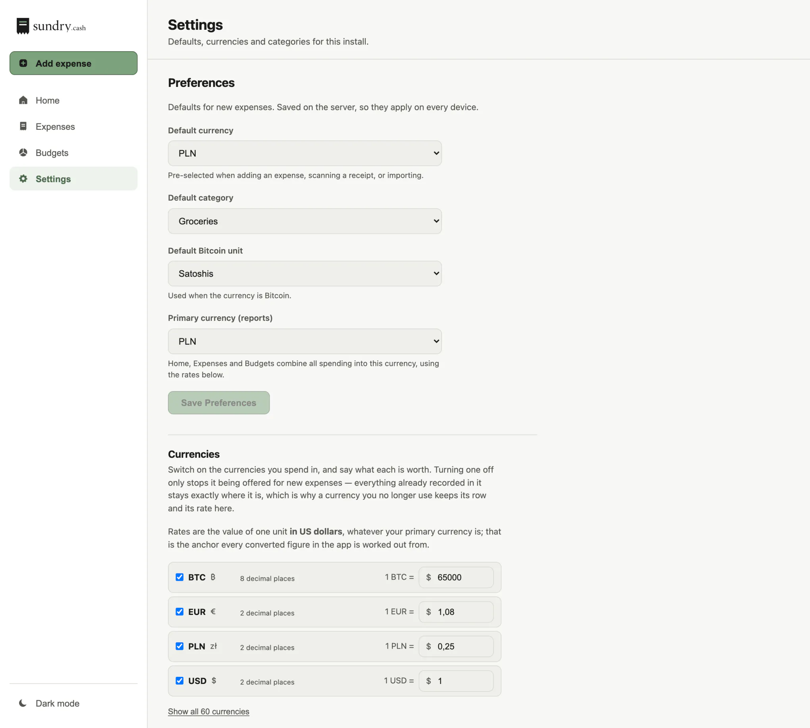
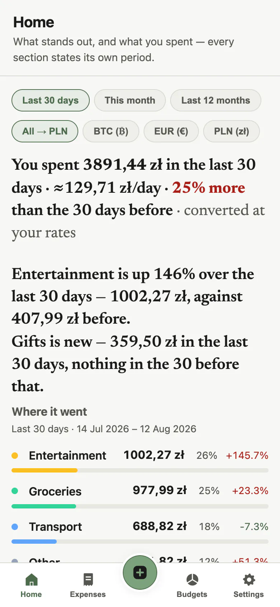
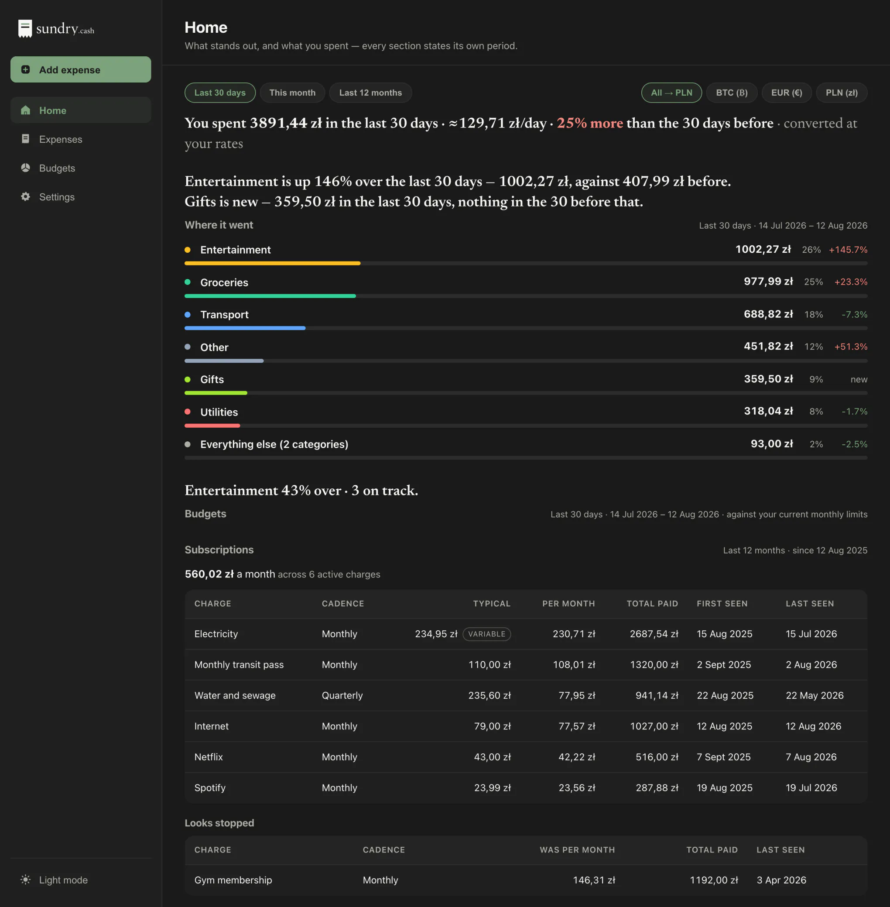

Sundry tells you what your money is doing, without you having to ask.
A personal expense tracker you run yourself. You type an expense, photograph a receipt or import a spreadsheet — and the first screen tells you what changed, what stopped, and where the money actually went.
It never asks for your bank credentials, because it does not want them. There is no aggregator to connect, no account to create, and nothing to send anywhere.
MIT licensed · two containers and one folder of data · no signup, ever

See it with data in it
demo.sundry.cash is a real instance with about eighteen months of spending already in it. No signup, no password, no email — the link opens the app, and you can add, edit and delete like it is yours.
The ledger is invented: believable amounts, a life that does not exist. Shop names are real, because that is what makes a ledger read like a ledger. It is wiped and re-seeded every night, so whatever you do to it is gone by morning.
One thing you cannot try there: receipt scanning is switched off on the demo. It runs OCR on the server's own CPU, and an open endpoint that does that is a free compute service for the internet. It is a real feature — there is a picture of it below.
What it notices
Every tracker has categories, budgets and charts. What Sundry opens with is the part you did not ask for. These are not slogans — they are the app's own sentences, printed by the demo on 12 August 2026, from the same ledger the screenshots below are of:
- Gym membership looks like it stopped — nothing since 3 Apr 2026, after 1192,00 zł at about 146,31 zł a month.
- Weekends cost more — about 225,55 zł a day over the last 366 days, against 81,34 zł on weekdays.
- Żabka adds up — 1734,88 zł across 108 purchases in the last 366 days, about 16,06 zł each.
- Gifts is new — 359,50 zł in the last 30 days, nothing in the 30 before that.
The demo re-seeds against the date it runs, so the figures waiting for you will not be these ones. The shape of them will be. Each sentence heads the section that proves it, and states the window it measured over.
The screens
Four places and a persistent Add. That is the whole product.






Three ways in
Self-host it
Free, today
Two containers, one folder of data. docker compose up and open
localhost:8847 — there is no config file to write and no database to
create. This is the free tier, not a trial of one.
MIT licensed. The repository is not public yet — write and I will send it to you.
Hosted, by hand
30 days free, then paid
Write to me and I will set an instance up for you: its own subdomain, its own password, its own file. Onboarding is manual on purpose — one instance is one person, so there is no signup to automate.
The price is not set. I would rather agree it with the first few people than guess at it here.
Sign up yourself
Does not exist yet
There is no self-serve signup, and pretending otherwise would waste your time. When there is one, it will be on this page.
If you want it, say so — that is the entire waiting list.
An email address rather than a form. A form converts better, but it would make this page hold personal data, on a site whose argument is that it collects none.
What it is not
Better you leave now than after setting it up.
- No bank sync.
- Expenses are typed, scanned from a receipt, or imported from a spreadsheet. There is no fourth way in, and this is a decision rather than a gap.
- One person per instance.
- There are no accounts — one instance is one ledger behind one optional password. A household can point every phone at it, but nobody can be told apart, so there is no shared ledger in any useful sense.
- No mobile app.
- It installs from the browser — Add to Home Screen on iOS, Install in Chrome — and the shell works offline. That is a PWA, which is not the same thing as an app in a store.
- No income tracking.
- None at all. It is an expense tracker.
Privacy, specifically
Every line here is a fact about the software rather than a promise about intentions, which means each one can be checked.
- No bank credentials, ever. No aggregator, no bank login, no card number — there is no column for one. The only password in the app is the one you set to lock your own instance, and it is optional.
- No telemetry, no analytics, no crash reporting, no update check. The interface has exactly one address it can call, and it is your own server.
- This page loads nothing from anyone else. No CDN, no Google Fonts, no tag manager, no embedded video, and not one line of JavaScript. Open the network panel and count: every request goes to this domain. Visits are counted by reading the web server's own log, which holds nothing about you that the request did not already carry.
-
Your data is a folder you can copy.
data/holds one SQLite database and your receipt photos. Stop the app, thencp -r data backup/— that is the entire backup story. There is a CSV and an .xlsx export too, for when you want a file to hand to someone else. -
One outbound request exists, and it is honest to name it. The first
receipt scan downloads its OCR language data from a public CDN, onto your server, not
your browser. Point
TESSERACT_LANG_PATHat a local copy and the app makes no outbound request at all. The photo itself is never sent anywhere: the text is read on your own CPU.
Who is behind it
One person: I am ptrio42, and I built Sundry because I wanted it to exist. There is no company, no investor and no growth target — which is exactly why the page above can afford to tell you what it does not do.